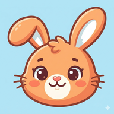

9:41
●●●●
🔋

Zeka
Learn a language · A1 to C1
Loading...
1000
🔥
0
⚡
0
❤️
5
Saved ✓
🏠
Learn
📝
Review
👤
Profile
✕
❤️
5
🎉
Lesson Complete!
Great job!
0
XP
0%
Accuracy
+0
ELO
Continue
📝 Review
Words you got wrong recently
🏠
Learn
📝
Review
👤
Profile
Robby
Novice
1000
ELO Rating
🔥
0
Streak
⚡
0
Total XP
📚
0
Lessons
🏆
0
Words
Sign Out
🏠
Learn
📝
Review
👤
Profile